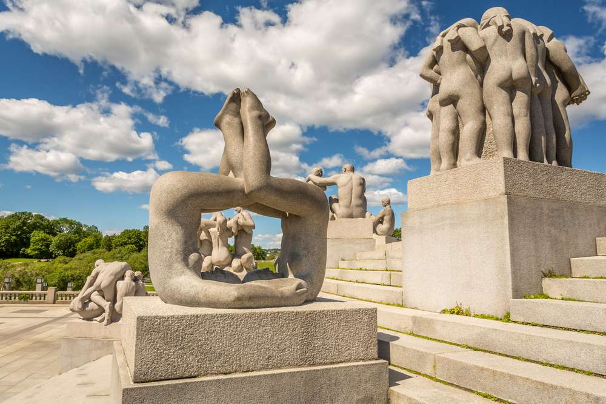
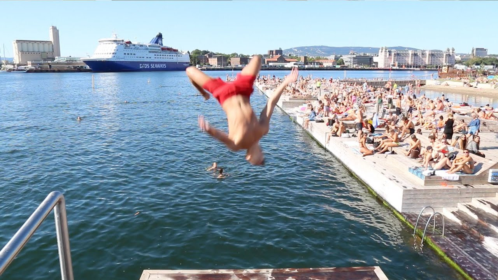

Karl Johans gate · 歌劇院屋頂 · Vigeland 公園 · 峽灣漫步
2026 年 8 月 Bank Holiday · 三天兩夜 · 從倫敦出發
奧斯陸是極度適合步行的首都，市中心地勢平坦、景點密集，幾乎所有重點都能用雙腳串連。本行程設計三條主題 City Walk，搭配一段峽灣渡輪，輕鬆而充實。
倫敦（LGW / LHR）直飛奧斯陸（OSL Gardermoen）約 2 小時，Norwegian、SAS、BA 每日多班。
去程：週五 8/28 晚間班機，抵達後搭 Flytoget 機場快線 19 分鐘進市區。
回程：週一 8/31（Bank Holiday）晚間班機返回倫敦。
英格蘭 Summer Bank Holiday 2026：8 月 31 日（週一）
週五 8/28 晚出發 → 週六、日、一整整三天玩奧斯陸 → 週一 8/31（Bank Holiday）晚間飛回。零請假、最大化長週末。
點擊標記查看景點詳情與步行導航。可用下方按鈕只看單日路線。紅=Day 1、藍=Day 2、綠=Day 3，虛線為渡輪。
從 Oslo S 出發，先看 1697 年的奧斯陸大教堂與旁邊的市集拱廊 Basarhallene，可在 Café Cathedral 喝杯咖啡暖身。
⏱️ 30 min 📍 導航奧斯陸最具代表性的步行大街，兩側是國會、大學、Studenterlunden 公園與精品店。一路向西可遠望皇宮。
🚶 700 m · 10 min ⏱️ 30 min挪威王室官邸，前方草坡與卡爾約翰騎馬像是經典拍照點。夏季可預約入內導覽；每日 13:30 有衛兵交接。
⏱️ 45 min 🛡️ 衛兵交接 13:30經國家劇院往海邊走到紅磚市政廳——每年諾貝爾和平獎頒獎地，內部巨幅壁畫免費參觀。
🚶 6 min ⏱️ 40 min沿海濱木棧道散步，眾多餐廳與海景露台。午餐推薦海鮮店 The Salmon 或在地連鎖 Olivia。
🚶 5 min 🍽️ 午餐走過 Aker Brygge 盡頭即抵 Tjuvholmen——Renzo Piano 設計的現代美術館、雕塑公園與海濱浴場，夏季可下水。
🚶 8 min ⏱️ 1h13 世紀中世紀城堡，居高臨下俯瞰峽灣。城牆與庭園免費開放，是黃昏前散步的好地方。
🚶 12 min ⏱️ 1h 💰 庭園免費白色大理石的斜面屋頂可直接步行登頂，俯瞰峽灣與城市天際線，是奧斯陸最棒的免費觀景點之一。
🚶 15 min ⏱️ 45 min緊鄰歌劇院的 13 層美術館，收藏《吶喊》原作。週六開放較晚，體力夠可加碼；否則於 Bjørvika 一帶晚餐收尾。
⏱️ 1–1.5h
全球最大的單一藝術家雕塑公園，212 座 Gustav Vigeland 作品，核心是 14 公尺高的「生命之柱」Monolith。免費全天開放，建議早上人少時前往。
🚋 電車 12 號至 Vigelandsparken ⏱️ 1.5h 💰 免費雕塑公園所在的 Frogner 公園綠意盎然，旁有奧斯陸城市博物館。可沿優雅的 Frogner 街區與 Bygdøy allé 散步往市區方向。
🚶 25 min ⏱️ 40 min2022 年啟用、北歐最大的藝術館，收藏挪威藝術精華與孟克《吶喊》另一版本。頂樓 Light Hall 與咖啡廳值得停留。午餐可在館內或鄰近 Aker Brygge。
🚶 20 min ⏱️ 1.5–2h 🍽️ 午餐奧斯陸最潮的街區：獨立咖啡、二手店、街頭藝術與 Olaf Ryes plass 廣場。搭電車或步行前往，最適合午後閒晃。
🚋 電車 11/12/13 ⏱️ 1.5h室內美食市集 Mathallen 集結各國攤位，旁邊的 Akerselva 河岸步道一路有瀑布與舊工廠改造空間，是傍晚散步晚餐的好去處。
🚶 8 min 🍽️ 晚餐
退房後寄放行李，到歌劇院後方的 Sørenga 峽灣海水泳池散步，夏季可下水。沿 Bjørvika 水岸與 Barcode 新區漫步。
⏱️ 1h峽灣旁的街頭美食市集，匯集移民與新銳廚師的料理，氣氛輕鬆，適合早午餐。
🚶 15 min 🍽️ 早午餐從市政廳前 Pier 3 搭乘 #B10/B9 公共渡輪約 15 分鐘抵達 Bygdøy。途中峽灣風光是免費的迷你郵輪體驗。
⛴️ 渡輪 15 min半島上有 Fram 極地探險船、Kon-Tiki、挪威民俗博物館等。時間有限可擇一，或步行到南端 Huk 海灘看峽灣與市景。（維京船博物館整修至 2027）
🚶 半島內步行 ⏱️ 2h搭渡輪或 30 號巴士回市中心取行李，於 Oslo S 搭 Flytoget 機場快線前往機場。
🚆 Flytoget 19 min於奧斯陸機場用晚餐後搭乘晚間直飛返回倫敦，結束 Bank Holiday 長週末。
✈️ ~2h| 項目 | 說明 | 參考價 |
|---|---|---|
| Flytoget 機場快線 | OSL ↔ Oslo S，約 19 分鐘，每 10 分鐘一班 | ~230 NOK |
| Ruter 市區交通日票 | 電車、巴士、地鐵、公共渡輪通用（Zone 1） | ~127 NOK |
| Oslo Pass | 多數博物館免費入場 + 大眾運輸，密集看館划算 | ~795 NOK / 48h |
| Bygdøy 渡輪 | Pier 3 出發，含於 Ruter 票；夏季密集發船 | 含於日票 |